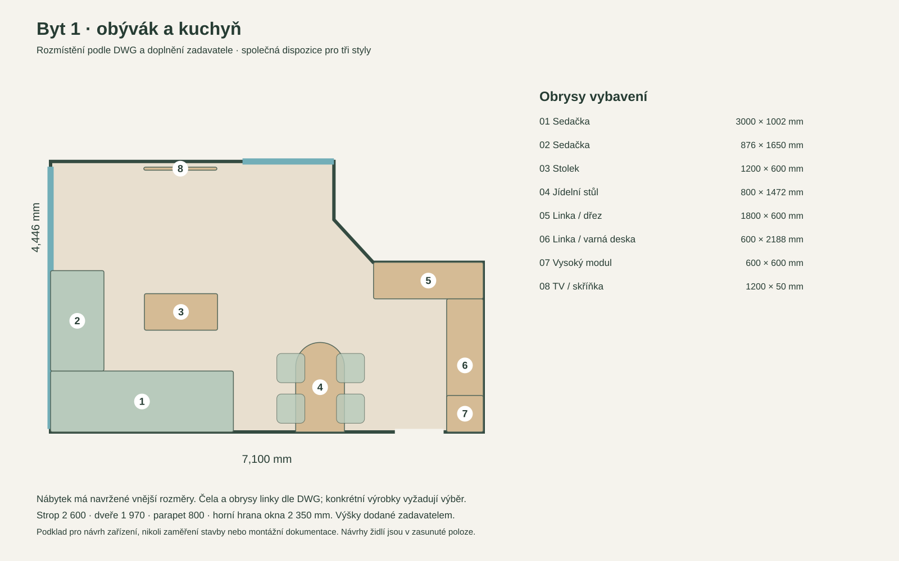
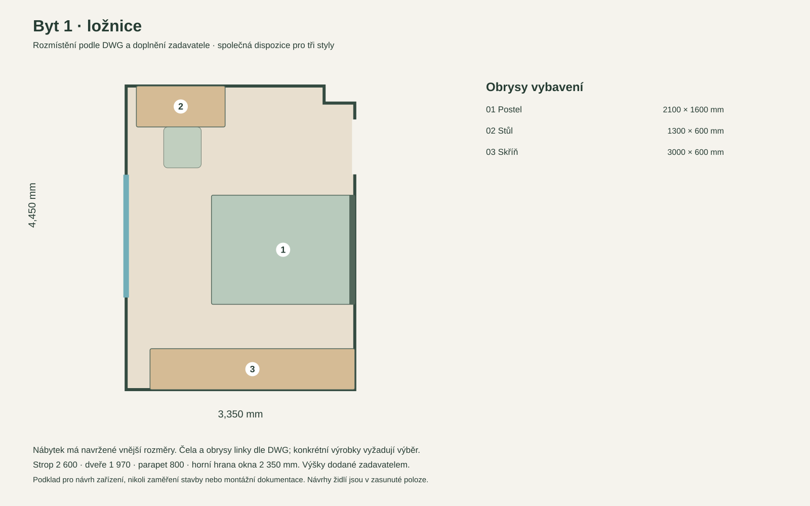
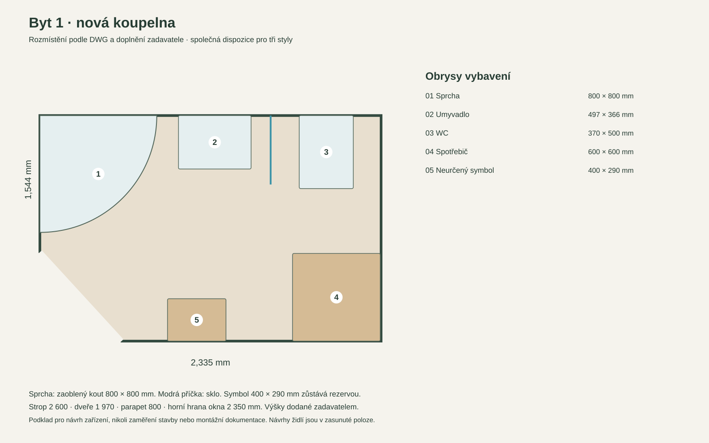
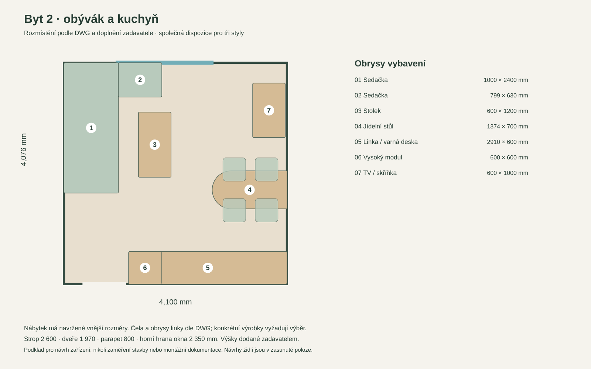
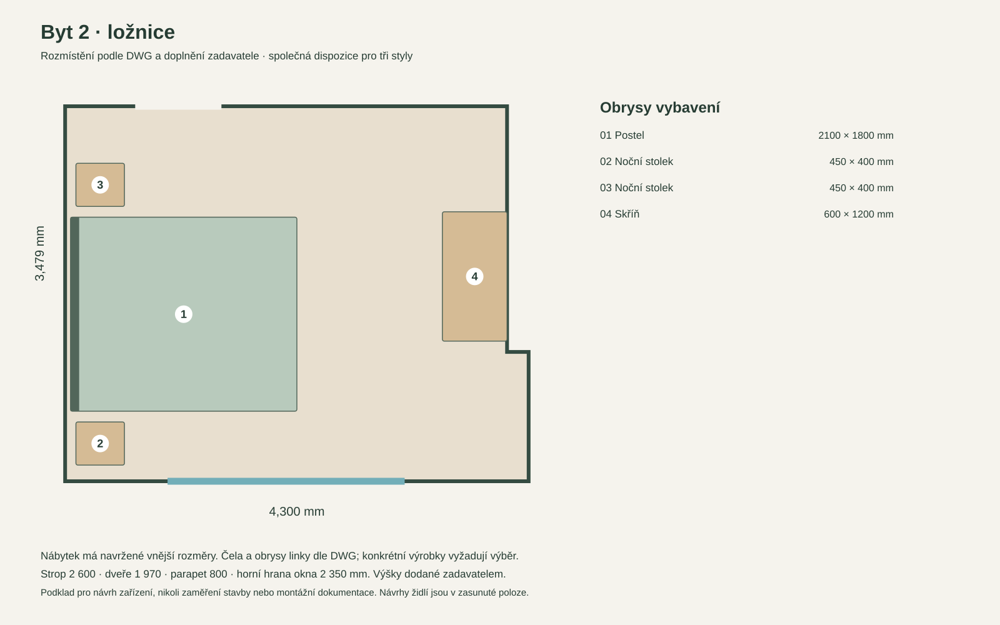
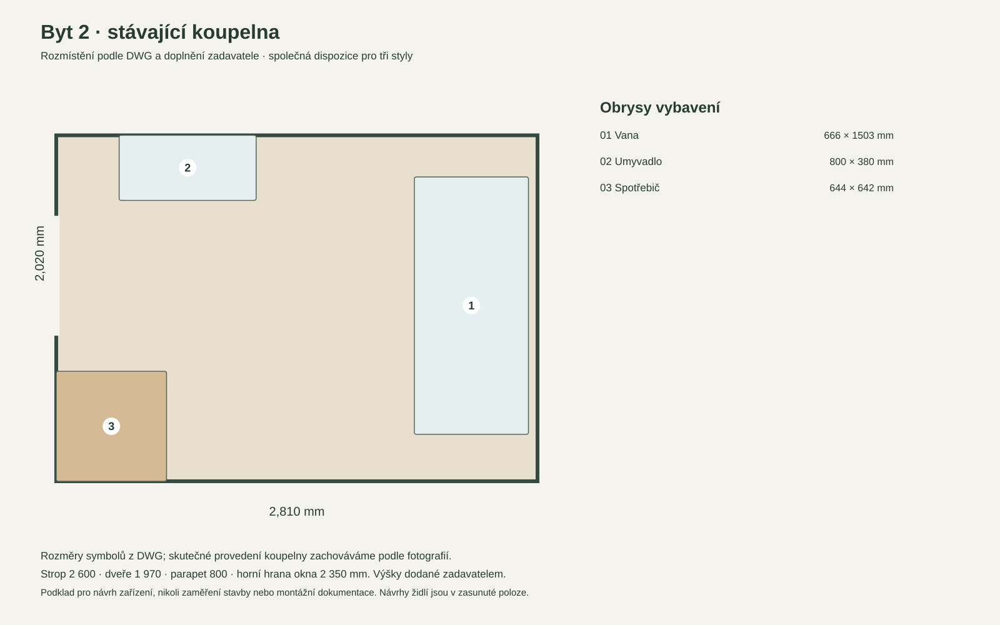
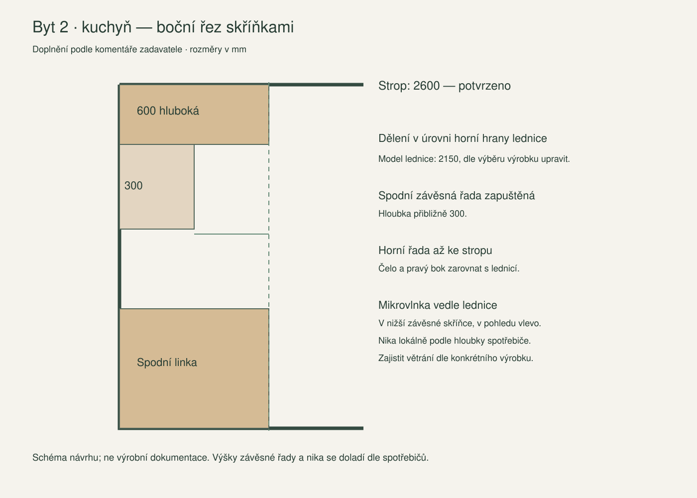

← Porovnání fotografií a všech stylůOpravené rozmístění.
Rozměry doložené plánem.
Aktuální sada · 27. října 2026. 21 vizualizací včetně tří doplňkových pohledů od vstupu. Ložnice 1 je nově zpracovaná přímo podle fotografie 04.
Kontrola aktuálních pohledů a variant.Rozmístění je porovnané s modelem odvozeným z DWG a s fotografiemi. Číselné rozměry a odstupy patří k níže uvedeným půdorysům. Perspektivní AI obraz sám nepotvrzuje přesnost na milimetry.
Potvrzené výšky
Strop 2600 mm · dveře 1970 mm · parapet 800 mm · nadpraží okna 2350 mm · francouzské okno od podlahy.
Symbol s bleskem znamená spotřebič. Přesný typ spotřebiče a případné stohování nejsou samotným symbolem určené.
Ložnice 1 podle posledního zadání
Čelo postele na východní stěně proti francouzskému oknu. Vestavěná skříň na jižní stěně místo původního obrazu. Pracovní stůl otočený o 90° podél západní stěny vpravo od okna, delší stranou rovnoběžně s oknem. Opravené vizualizace vycházejí z fotografie 04: francouzská okna jsou vpravo, skříň vzadu a čelo postele vlevo. Pracovní místo je mimo tento záběr.
Rám postele 160 × 210 cm, skříň 300 × 60 cm a stůl 130 × 60 cm. Od nohou postele k západní stěně 125 cm, mezi bokem postele a skříní 65 cm. Přesné výrobky je nutné vybírat podle vnějších rozměrů rámu, ne jen matrace.
Byt 1 · obývák a kuchyň
Opraveno: kuchyň do L, vstup do koupelny ve zkosení, stůl přisazený ke stěně. Rozměry a obrysy jsou doložené samostatným půdorysem; perspektivní obraz je AI vizualizace návrhu. Připomínka 27. 10.: klient uvádí 900 mm a 45°. Extrahovaný DWG/model má úsek 956 mm a úhel 47,5°; přesné stavební provedení tohoto rozdílu je třeba potvrdit. Starší render v zaslané zprávě již není aktuální. Doplněný obraz na kolmé stěně koupelny vedle okna ve všech třech stylech. Poslední připomínka: ve variantě Současný útulný mají horní i spodní kuchyňské skříňky jednotnou jemnou šalvějovou pastelovou barvu, v obou pohledech.

Otevřít plán SVG · Tři vizualizace a komentáře
Byt 1 · ložnice
Oprava podle skutečné fotografie 04: francouzská okna vpravo zůstávají zachovaná; rovné pravoúhlé stěny bez přidaného zkosení. Skříň je na zadní jižní stěně, čelo postele na levé východní stěně, nohy směřují k oknům. Pracovní stůl 130 × 60 cm zůstává podél západní stěny severně od okna mimo tento pohled. Perspektiva je srovnaná, posuvník není překrytí totožných pixelů.

Otevřít plán SVG · Tři vizualizace a komentáře
Byt 1 · koupelna
Upraveno podle komentáře: rohový čtvrtkruhový sprchový kout 80 × 80 cm s oblým čelem, mezi umyvadlem a WC tenká skleněná příčka. Rozmístění sanity a pračky zachované. Přesný výrobek, výšku skla a montážní kotvení je nutné určit před realizací; neidentifikovaný symbol 400 × 290 mm zůstává rezervou.

Otevřít plán SVG · Tři vizualizace a komentáře
Byt 2 · obývák a kuchyň
Podle komentáře: spodní závěsná řada kuchyně zapuštěná na přibližně 30 cm, horní hlubší řada až ke stropu, čela a pravý bok zarovnané s lednicí. Mikrovlnka ve spodní závěsné skříňce vedle lednice (v pohledu vlevo). Výška dělení podle konkrétní lednice; hloubku niky a větrání je nutné přizpůsobit spotřebiči. Jídelní židle jsou zasunuté; úzký průchod přibližně 56 cm při odsunutí židlí dále klesá.

Otevřít plán SVG · Tři vizualizace a komentáře
Byt 2 · ložnice
Podle komentáře odstraněné antény a sousední zábradlí z výhledu ve všech třech návrzích. Jde o retuš výhledu pouze ve vizualizacích; skutečné původní fotografie zůstávají beze změny. Rozmístění postele, oken a zařízení zachované.

Otevřít plán SVG · Tři vizualizace a komentáře
Byt 2 · koupelna
Stávající koupelna zachovaná podle skutečné fotografie, včetně vany, umyvadlové skříňky, obkladů a zástěny. Tři varianty mění jen doplňky; použité jsou již srovnané záběry. Rozměry výrobků nelze z fotografie potvrdit.

Otevřít plán SVG · Tři vizualizace a komentáře
Byt 1 · pohled od vstupu k oknu
Doplňkový úhlopříčný pohled od vstupu přes kraj kuchyně směrem k velkému oknu. Stejné rozmístění: stůl u levé stěny, sedačka u velkého okna, TV na protější stěně. Originální fotografie 01 dokládá okna a původní stav; kamera návrhu je posunutá ke vstupu, nejde o přesné pixelové překrytí. Poslední připomínka: ve variantě Současný útulný mají horní i spodní kuchyňské skříňky jednotnou jemnou šalvějovou pastelovou barvu, v obou pohledech.
Otevřít plán SVG · Tři vizualizace a komentáře
Byt 2 · řez kuchyňskými skříňkami

Co ještě vyžaduje potvrzení před realizací
- Skutečné závěsy a směr otevírání dveří, montážní tolerance nábytku a soklů. U dveří ložnice 1 je 305 mm odstup ke konzervativnímu čtverci pohybu dveří; nejde o šířku průchodu.
- Vysunutí jídelních židlí: půdorysy zobrazují zasunuté židle. V bytě 2 je přibližně 560 mm mezi obrysem židle a linkou; plně odsunutá židle průchod omezí.
- Pracovní stůl ložnice 1 má nově obrys x = 0–600 mm, y = 3150–4450 mm. Židle je směrem do místnosti, předpokládaný prostor používání x = 600–1400, y = 3400–4100 mm. Nezasahuje do postele ani otvoru dveří; způsob otevírání francouzského okna musí být potvrzen.
- V koupelně 1 zůstává neidentifikovaný symbol 400 × 290 mm rezervou. Rozměry konkrétní sanity, příčky a diagonální vstup je nutné potvrdit.
Kontrola obrysů nezjistila jednoznačnou nechtěnou kolizi nábytku. Židle zasunuté pod stolem a vysoký modul uvnitř obrysu kuchyně jsou záměrné překryvy. Nejde o kompletní kontrolu pohybu dveří, přístupnosti ani nové zaměření.
DWG a dodané PDF se na 20 kontrolních bodech shodují do přibližně 6,25 mm v přepočtu. To dokládá shodu podkladů, nikoli skutečnou přesnost stavby. Nové obrazy mají 1448 × 1086 px; koupelna 2 zachovává rozlišení odvozené z fotografií 1300 × 954 až 1366 × 1004 px.
Vizuální kontrola · Číselná kontrola obrysů · Model rozměrů · Výpočty ze zdroje (historický audit) · Archiv kontroly předchozí sady